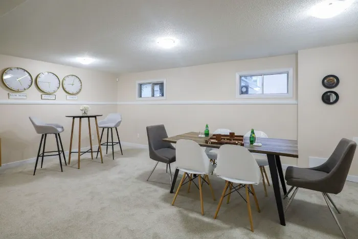
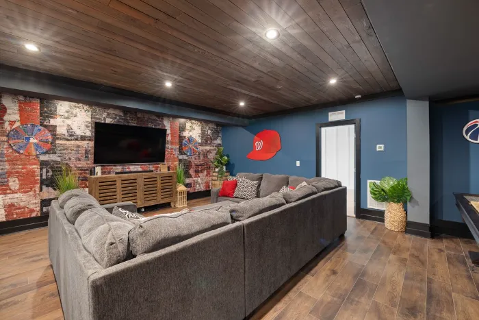
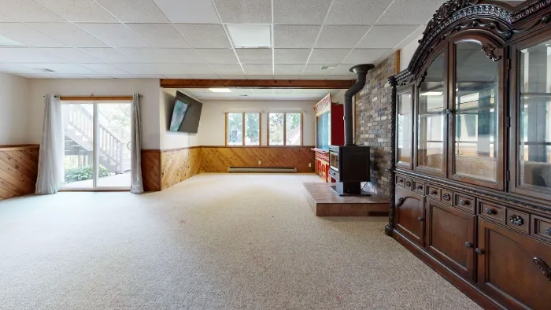

Basement Renovations
A family room, guest room, office or gym. Plan the scope, the order of work and the questions to ask.
Plan a renovation Reno Rise
Reno Rise
Basement & Legal Suite Planning
Home Services Basement Renovations Legal Secondary Suites Basement Finishing Underpinning Waterproofing Egress Windows Separate Entrances Soundproofing Basement Flooring Guides Service Areas About Contact Get MatchedWhether you’re finishing your basement, creating more living space or exploring a legal secondary suite, Reno Rise helps you understand the project and connect with independent local renovation professionals.
Reno Rise helps Toronto homeowners plan basement renovations and legal secondary suites and connect with independent local renovation professionals.
Share your goals, your basement and your timeline using the enquiry form.
We look at what you have shared to understand the scope and what still needs to be confirmed.
Reno Rise matches your project with the contractor best suited to the work, and they take it from there.
Start with the goal. Each guide explains what the project involves, what to ask, and what to confirm before you hire.
A family room, guest room, office or gym. Plan the scope, the order of work and the questions to ask.
Plan a renovationWhat makes a basement apartment legal, how it differs from a finished basement, and what to confirm with Toronto Building.
Read the suite guideLowering a floor to gain ceiling height is structural work. Learn when it comes up and how it is approached.
Explore underpinningDiagnose the cause of damp or leaks before finishing. Interior, exterior and drainage options explained.
Explore waterproofingSafe exits, natural light and a private entrance are central to a suite. See what is involved.
Explore egress windowsWhich basement work needs a permit in Toronto, and how drawings, engineers and inspections fit in.
Explore permits & designReno Rise is focused on basements, but these general guides are still available. They are information pages, and this work is carried out by independent professionals.
Ideas for how a finished basement can look and feel. These are stock photos from Pexels, shown for inspiration only. They are not Reno Rise projects, and Reno Rise does not perform renovation work.



They can look alike, but they are different projects with different rules. Deciding which one you want shapes the budget, the drawings and the permit path.
Extra living space for your own household. Permit needs depend on the work involved: structural, plumbing or heating changes usually call for one.
About basement finishingA separate, self-contained home with its own kitchen and bathroom that must meet zoning, Building Code and Fire Code requirements, and is created with a building permit.
Compare the twoRules depend on the property and change over time. Confirm requirements with Toronto Building and the professionals responsible for your project. Reno Rise cannot say whether a specific basement is legal or eligible.
What Toronto Building says needs a permit, and what usually does not.
Read the guideWhat moves the price, how to compare quotes, and what to ask before you sign.
Read the guideCeiling height, structure and cost drivers explained in plain language.
Read the guidePlanning a basement project involves a lot of unknowns. Reno Rise helps you understand the project first, then matches you with the right contractor.
Guides on permits, costs, underpinning and legal secondary suites explain what a project involves before you speak to anyone.
Share your goals, basement and timeline in one enquiry. Reno Rise matches your project with the contractor best suited to the work.
Reno Rise reviews your project and selects the contractor best suited to it, so you do not have to search on your own.
Reno Rise is not a contractor. Estimates, contracts, warranties and permit responsibilities belong to the contractor doing the work, so confirm them before you sign.
The guides and requirements are written for Toronto homes and basement projects, and enquiries from across the Greater Toronto Area are welcome.
Reno Rise cannot say whether a specific basement is legal or eligible for a permit. It points you to Toronto Building and the professionals responsible for the work.
Reno Rise is focused on Toronto homes. Enquiries from elsewhere in the Greater Toronto Area are welcome too.
“Saved my a$!. Butt lot outstanding service, affordable, and not to mention very quick to get ‘er done!!! They offer all sorts of services, mine was plumbing and they truly saved the day. My heroes. 10/10 would recommend.”
“Amazing work and an outstanding crew. Very professional, energetic, and a pleasure to work with from start to finish. They communicate openly throughout the entire project, show up reliably, and get the job done right.”
“We needed underpinning done before finishing the basement and most contractors wouldn’t even quote it properly. Reno Rise walked us through the whole process.”
“Got a quote within a day and the crew showed up when they said they would, every single time. Our kitchen went from 1998 to something we actually want to cook in.”
No. Reno Rise is an independent project-enquiry and contractor-matching service. It does not perform construction, inspections or permit applications. Estimates, contracts, warranties and the work itself come from the independent contractor Reno Rise matches you with.
Reno Rise reviews the details you send about your project, then matches it with the contractor best suited to the work. That contractor provides the estimate, the contract and the warranty for the job. Reno Rise itself does not perform construction, inspections or permit applications.
A finished basement is extra living space for your own household. A legal secondary suite is a separate, self-contained home that must meet zoning, Building Code and Fire Code requirements and is created with a building permit. The comparison guide explains the differences.
It depends on the work. Structural, plumbing, heating or layout changes usually involve a permit, while some cosmetic work does not. Confirm with Toronto Building and the professional doing the work. The permit guide covers the basics.
No. Whether a particular basement qualifies depends on the property, zoning and current rules. Reno Rise can help you understand what is usually checked, but the decision rests with Toronto Building and the professionals responsible for your project.
Reno Rise focuses on Toronto homes, and enquiries from elsewhere in the Greater Toronto Area are welcome. See the service areas. Reno Rise concentrates on basements, but information pages on other home improvement services are available.
Tell us about your basement and your goals. Reno Rise reviews the details and matches your project with the contractor best suited to the work.